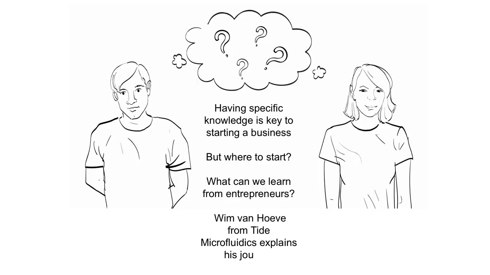
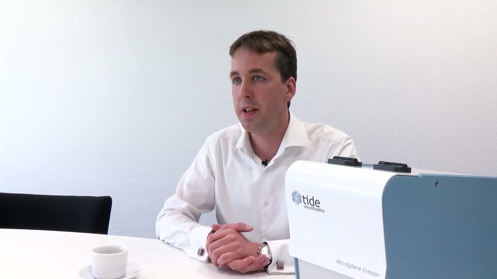
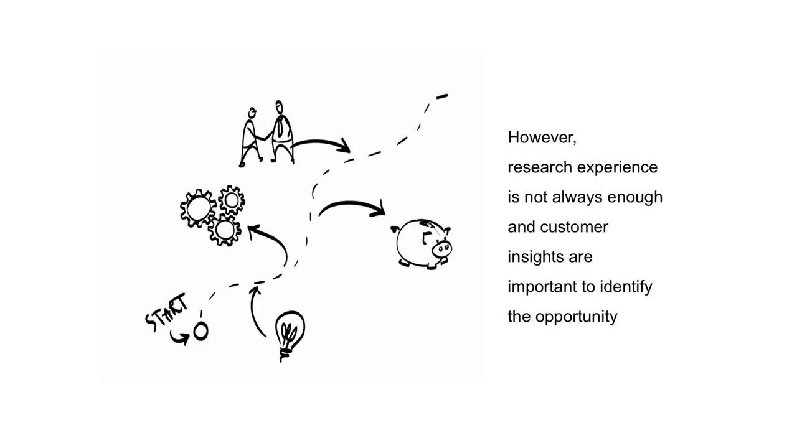
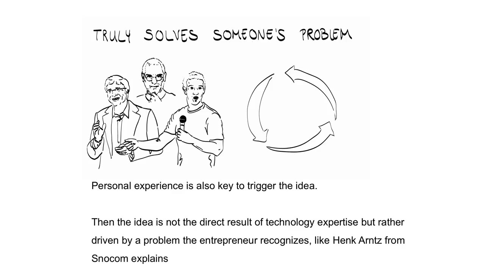
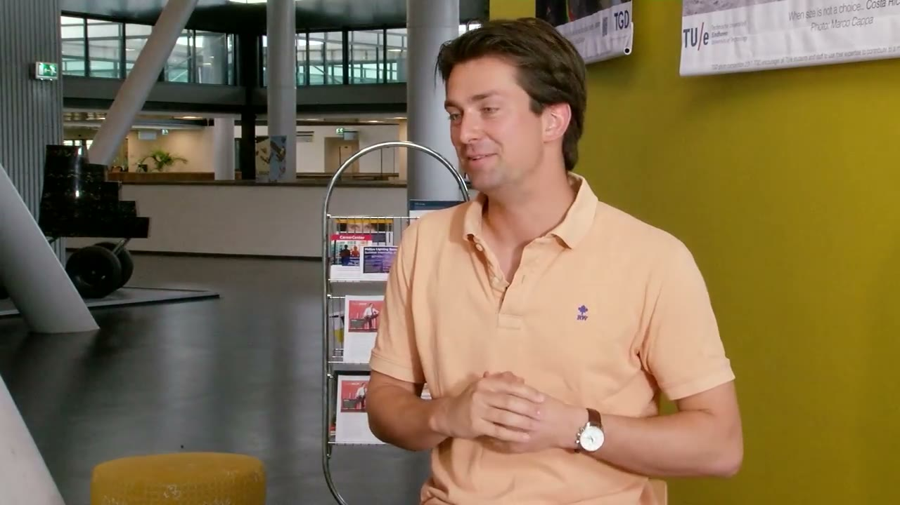
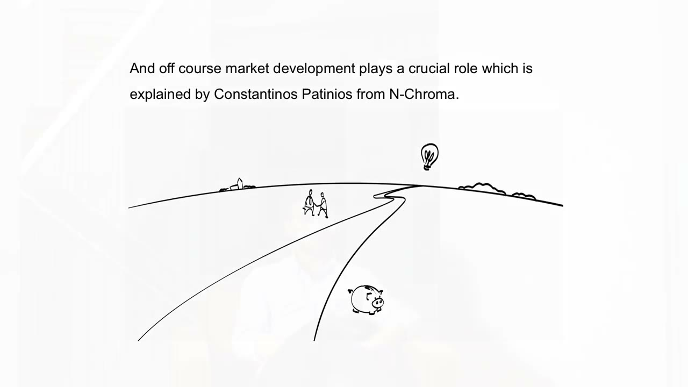
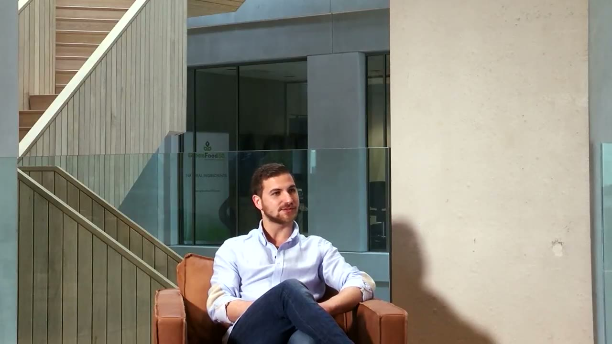
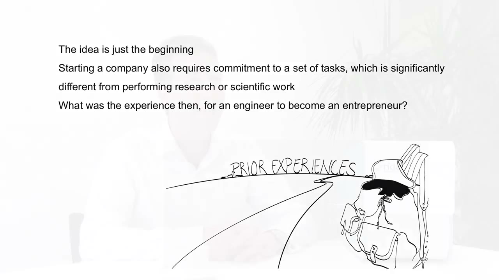
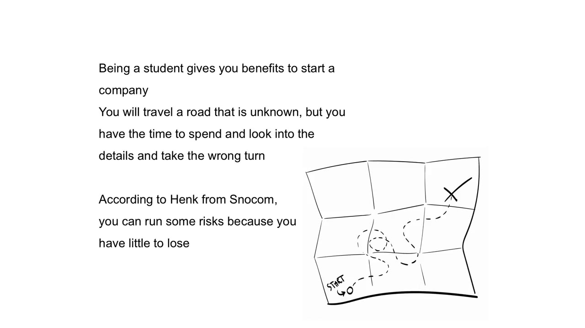
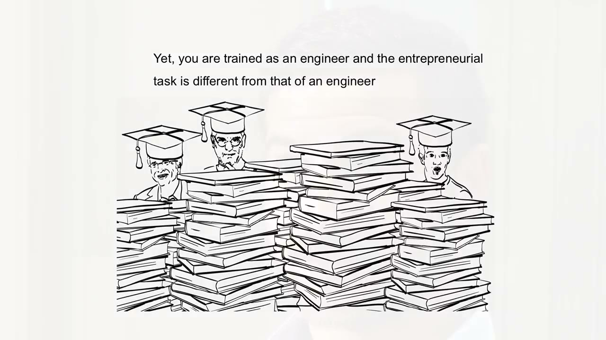

Where to start
The narrator opens with a claim and two questions. Having specific knowledge is key to starting a business. But where do you start, and what can we learn from entrepreneurs? Three founders answer.
- Wim van HoeveTide Microfluidics
- Henk ArntzSnocom
- Constantinos PatiniosN-CHROMA


An idea that grew out of research
Wim van Hoeve started thinking about his business during his PhD. The research was broad and fundamental: how can we make particles? The technology that later went into ultrasound contrast agents was developed in that period. He was already in touch with people in the pharmaceutical industry and the food industry, and they wanted to understand better how to create small particles.


The narrator then adds a caution. Research experience is not always enough, and you need customer insights to identify the opportunity. For Wim those came after the PhD, when he was working inside the industry.
I worked then as a consultant at a pharmaceutical company in Switzerland. And during that time I could really identify a clear market need for this technology.
There he saw that the technology could produce ultrasound contrast agents in a much better way.


An idea that came from a problem
Personal experience can also trigger the idea. In that case the idea is not the direct result of technology expertise. It is driven by a problem the entrepreneur recognizes. Henk Arntz of Snocom is the example.


In the winter of 2010, 2011, there was a huge snowfall in the Netherlands. And I got stuck in a Dutch train due to a few centimeters of snow. So I had plenty of time to think about the challenges of snow.
Arntz watched a short YouTube video about how airports clear a runway and saw a row of trucks driving next to each other, plowing the snow to one side. Could one machine could drive over the runway and get rid of the snow straight away? Then came the calculating. The numbers showed that the snow has to be compressed, because otherwise the whole concept does not work. The thinking that began in that train, Arntz says, never stopped.


An idea that followed the market
Market development is the third source. Constantinos Patinios explains that the idea behind N-CHROMA came from a need he perceived in the market. The food industry is replacing the artificial colors in its products with natural ones. Natural colors come from plants. Plants compete for agricultural land, and so with food, and the colors they give are very low in quality. N-CHROMA wants to provide a new type of colorant and use microorganisms to make it.




From engineer to entrepreneur
The idea is just the beginning. Starting a company also means committing to a set of tasks that are significantly different from research or scientific work. The narrator asks what that change was like for an engineer.


For Wim it was not much of a change.
It did not really feel as a transition for me. It was more a natural progression.
He did meet people along the way who were a bit surprised that a scientist can also be an entrepreneur.
Starting while you are a student
Being a student gives you advantages when you start a company. The road is unknown, but you have the time to look into the details and to take a wrong turn. According to Henk, you can run some risks because you have little to lose.


Henk calls a student almost a blank page. When the market throws problems at you, you start thinking about solutions without much prior knowledge of what is possible. You do not know how corporates or large institutions work.
The only thing you know is that you have a problem and you need to find a solution, and you have the time to think about the solution. So you can think outside the box and there is nothing to lose.
Learning the part you were not trained for
You are trained as an engineer, and the entrepreneurial task is different from an engineer's. Constantinos describes the gap in his own case. He has a bachelor in biology and is doing a master's in plant biotechnology at Wageningen University and Research. That is knowledge in science. He had none in entrepreneurship.


So when he joined the master's he took several entrepreneurship courses. From them he learned how to build a business model canvas and how to approach a customer.
Technology as the firm base
Technology is the asset that makes your company unique and may deliver value to others. Wim says that to make the step he needed a firm base, and that he had two things to stand on. He knew the technology was reliable and robust and that it could make the contrast agents. He also knew it could solve an important issue in the field, so there was a clear market need. In his words, this knowledge was the basis of the company.
Constantinos built his base while still studying. On the science side he approached a professor at the university, and together they set up a minor thesis in which he could develop the technology for his company. On the entrepreneurship side he names StartLife, which gave him the tools to develop a business model canvas, approach clients and do a market analysis.